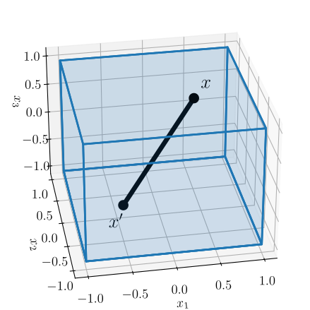
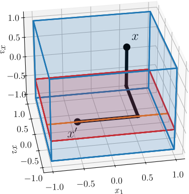
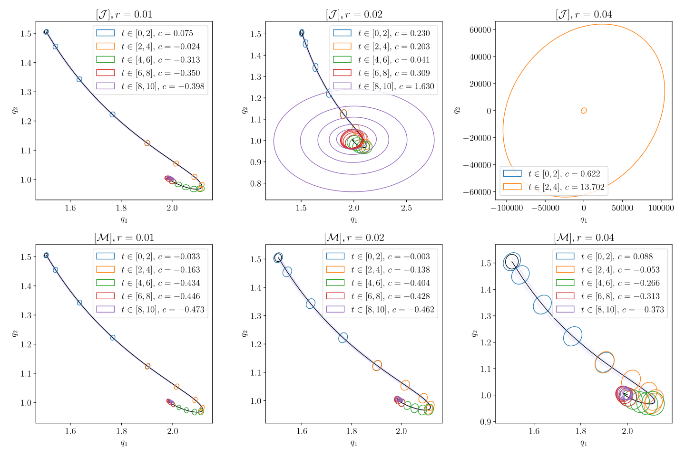
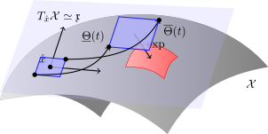

Contraction Workshop @ CDC 2024
School of Electrical and Computer Engineering, Georgia Institute of Technology
December 15, 2024
A linear differential inclusion (LDI) is of the form \[ \dot{x} \in \Omega x, \quad x(0) = x_0, \] where \(x\in\mathbb{R}^n\), \(\Omega\subseteq\mathbb{R}^{n\times n}\) is a set of matrices.
Proposition 1 (Exponential Stability of LDIs [1])
If there exists \(c\in\mathbb{R}\) such that \(\mu(A) \leq c\) for every \(A\in\Omega\), then \[ |x(t)| \leq e^{ct} |x(0)| \] for any trajectory \(t\mapsto x(t)\) of the LDI.
Consider some differentiable function \(f:\mathbb{R}^n\to\mathbb{R}^m\).
Proposition 2 (Jacobian Linear Inclusion [2])
If \(\{\frac{\partial f}{\partial x}(x) : x\in\mathbb{R}^n\} \subseteq \mathcal{J}\), then for any \(x,x'\in\mathbb{R}^n\). \[ f(x) - f(x') \in \overline{\operatorname{co}}(\mathcal{J}) (x - x'). \]
Intuition: Apply mean value theorem to the line segment connecting \(x\) and \(x'\)

Consider \(\dot{x} = f(x)\) for \(C^1\) smooth \(f\). Set \(\varepsilon = x - x'\).
Proposition 2: \(\dot{\varepsilon} = f(x) - f(x') \in \overline{\operatorname{co}}(\mathcal{J}) (x - x') = \overline{\operatorname{co}}(\mathcal{J}) \varepsilon\)
Proposition 1 + Convexity: \(\sup_{J\in\mathcal{J}} \mu(J) \leq c \implies |\varepsilon(t)| \leq e^{ct}|\varepsilon(0)|\)
Result is the usual norm bound. For any two trajectories \(t\mapsto x(t),x'(t)\), \[ |x(t) - x'(t)| \leq e^{ct} |x(0) - x'(0)| \]
Theoretical Infinitesimal Linearization (closed-form) \(\iff\) Computational Error LDI Analysis (set)
Computational Advantage: Automatic, parallelizable and differentiable constructions of overapproximating interval Jacobian sets using modern tools: automatic differentiation and interval analysis [5]
import immrax as irx
import jax.numpy as jnp
f = lambda x : jnp.array([x[0]**2, x[1]**3 + jnp.sin(x[0])]) # Dynamics
J = irx.jacM(f) # autodiff + interval analysis
print(J(irx.interval([-1., -1.], [1., 1.]))) # Interval Overapprox of JacobianCan apply any strategy from LDI analysis [2], including LMI-based control design.
Example: Stable feedback control design on error LDI \(\implies\) contracting feedback tracking control
In many applications, a nominal trajectory is fixed: reachable set computation, tracking control design, training, etc.
An elementwise application of the mean value theorem obtains a different inclusion: potential improvement for fixed \(x'\).
Mixed Jacobian LDI
Fixing a point \(x'\in\mathbb{R}^n\), an element-wise application of mean value yields \[ \begin{gather*} \begin{aligned} (M_{x'}f& (x, s))_{ij} \\ &:= \frac{\partial f_i}{\partial x_j} (x_1,\dots,x_{j-1},s_jx_j + (1-s_j)x'_j,x'_{j+1},\dots,x'_n) \end{aligned} \\ M_{x'}f(\mathbb{R}^n,[0,1]^n) \subseteq \mathcal{M}\implies f(x) - f(x') \in \overline{\operatorname{co}}(\mathcal{M}) (x - x'), % |x(t) - x'(t)| \leq e^{ct} |x_0 - x'_0| \end{gather*} \] for any \(x\in\mathbb{R}^n\).
Proposition 1 + Convexity: \(\sup_{M\in\mathcal{M}} \mu(M) \leq c \implies |\varepsilon(t)| \leq e^{ct}|\varepsilon(0)|\)

Reachable Set Computation: [7] Simulate nominal \(t\mapsto x'\), upper bound logarithmic norm around \(x'\), bloat/shrink a norm ball.
Interval Overapproximations: [8] Use interval overapproximations of the Jacobian to overapproximate logarithmic norm.
Automated: immrax automatically computes interval \([\mathcal{M}]\) matrices, SDP searches for \(\|\cdot\|_{2,P^{1/2}}\) norms.
Novelty: Compare directly to \(x'\), not arbitrary trajectories. Strict Improvement: \([\mathcal{M}]\subseteq[\mathcal{J}]\)

For all the details, please see the preprint
Thank you for your attention!
Presenting “Efficient Reachable Sets on Lie Groups Using Lie Algebra Monotonicity and Tangent Intervals” tomorrow:
MoA20.2, 10:20 - 10:40, Suite 9
